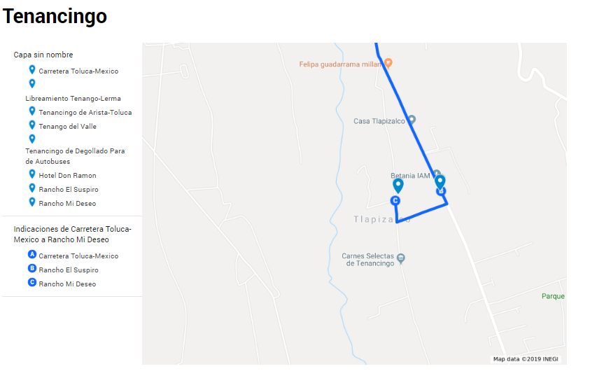
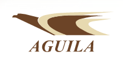
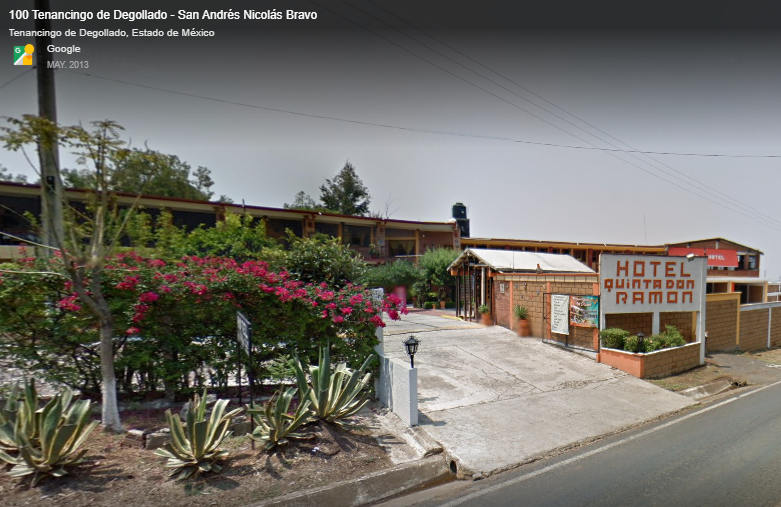

Una de las etapas más importantes de mi vida está por terminar; sin duda fue largo, cansado y divertido el camino que recorrí, pero no lo hice solo, tuve a mi lado a personas increíbles que me apoyaron, me alentaron y me motivaron para nunca persistir de mi meta.
Por eso es importante para mi que podamos festejar juntos este momento, ya que no sólo es una graduación, es mi forma de decirle a todos mis amigos y familiares ¡GRACIAS!
Jamás me imaginé en una fiesta de graduación, en un gran salón lleno de gente que no conozco, no, esa nunca fue la idea de mi graduación, por eso este evento es un lugar íntimo, un lugar donde pasé grandes momentos.
Ahora, espero que juntos podamos crear un nuevo recuerdo.
El sábado 16 de noviembre a las 14:00 hrs. los esperamos para poder festejar juntos este evento.
La casa se encuentra en la carretera Tenancingo Zumpahuacan km 135, a unos 15 km.
Si tu opción para llegar es en coche, preparé un mapa con la ruta más óptima para poder llegar.
Mapa

Si tu elección es llegar en camión, la opción sería la siguiente.
• De la central de camiones Observatorio línea Las Águilas, con precio de $110. Al momento de comprar el boleto pide por el que va por el libramiento.
• El camión pasa por Tenancingo, pero no termina su recorrido ahí, por lo cual deben de estar atentos cuando vaya entrando al municipio de Tenancingo para que se bajen en la parada de camiones.
• Llegando a Tenancingo, deberán tomar un taxi que los lleve a Zunpahuacan y con el mapa que adjunté, poder guiar al conductor.
• La casa no está como tal a lado de la carretera, por lo que, si el taxi no quiere entrar al camino para llegar al rancho, me pueden llamar para recogerlos.

Festejar hasta el amanecer… ¡SÚPER SI! la idea del evento es poder festejar hasta el otro día y hacer que dure lo mas posible, por lo cual encontramos la opción ideal para que se puedan hospedar.
Don Ramon
Se encuentra aproximadamente a unos 2 km de la casa, además de ser una opción accesible.
Cuenta con diferentes tipos de habitaciones:
• 10 habitaciones sencillas $300 (1 cama)
• 8 habitaciones dobles $600 (2 camas matrimoniales)
• 2 habitaciones familiares $1000 (9 camas)
Si deseas alquilar una habitación para el evento te puedes comunicar con mi mamá, Cecilia Altamirano (55-37-85-99-33), para que ella pueda gestionar con el administrador del hotel y se pueda apartar el lugar solo para nuestro evento.

En verdad espero que puedas asistir a este día tan importante para mi, por que sin duda sin ti esto no sería posible.